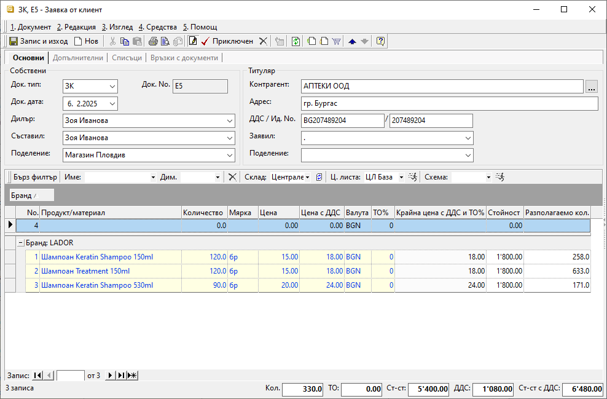
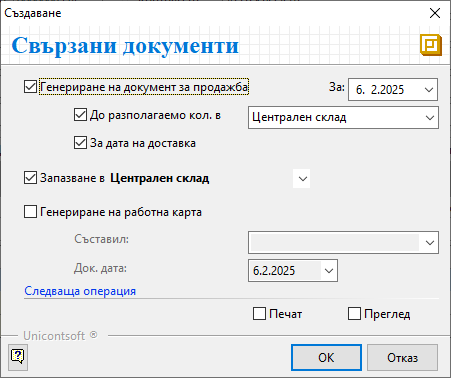
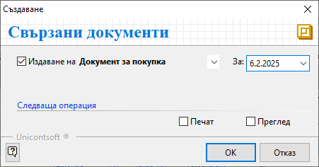

2.2.1.1. Документи за заявка към доставчик/от клиент#
От меню Търговска система || Документи за заявка в системата се регистрират поръчките към доставчик - чрез Заявки към доставчик, и тези от клиент - чрез Заявки от клиент.
Тези документи осигуряват контрол на логистиката и етапите на изпълнение на поръчките.
Системата дават възможност за автоматично създаване на необходимите свързани документи - покупки, продажби и др.
От списъка с Документи за заявка чрез десен бутон на мишката се избира Нов документ. Отваря се форма за въвеждане и редакция на нов документ.
В раздел Основни се въвеждат:
Док. Тип – в полето се отваря падащ списък за избор на тип документ;
Избира се ЗК-Заявка от клиент, когато се регистрира поръчка от клиент.
Тип ЗД-Заявка към доставчик се избира, когато се въвежда направена заявка от Потребител на продукта към доставчик.Док. No - полето се попълва с номер на документа;
Системата автоматично попълва пореден номер за текущия тип заявка при приключване на документа.Док. дата - в полето се избира дата, за която се отнася текущата заявка;
Дилър - в това поле може да се избере служител, който пряко отговаря за взаимоотношенията с текущия контрагент;
Данните в полето се попълват автоматично, когато за избрания контрагент е настроен дилър по подразбиране.Съставил - полето се обзавежда от падащо меню с предварително настроен списък служители;
Данните в полето се попълват автоматично с настройките на текущия потребител.Поделение - в полето може да се посочи поделение от предварително настроените в контрагент Потребител на продукта;
Контрагент – в полето се отваря форма Контрагенти за избор на клиент/доставчик;
Ако търсеният контрагент не фигурира в съществуващия списък, системата позволява въвеждането му в момента чрез десен бутон и Нов контрагент.
Останалите полета в секция Титуляр се обзавеждат с настроените реквизити за избрания контрагент.

Продукт/материал – от реда за нов запис се въвежда списък с всички заявени продукти;
Ако продуктите не са предварително въведени, системата позволява това да се направи в момента чрез десен бутон и Нов продукт.Количество - в колоната се въвеждат заявените количества по продукти;
Мярка - системата дава възможност в полетата на тази колона да се избере мерна единица, различна от настройките по подразбиране;
Цена и Цена с ДДС - в тези полета автоматично се попълват цените от ценовата листа, настроена за текущия контрагент;
Системата позволява прилагане на различна ценова листа. Това става от лентата с Бърз филтър над списъка с продукти.
В раздел Допълнителни могат да се настроят реквизити за доставка, транспорт, плащане и други.
Чрез бутон Приключен от лентата с инструменти се отваря форма за генерация на свързани документи. Системата дава възможност за автоматично създаване на различни свързани документи спрямо типа на заявката.
При въвеждане на ЗК-Заявка от клиент*:
Генериране на документ за продажба - при поставянето на отметка системата ще генерира свързан документ за продажба;
За (дата) - избира се дата, която системата да попълни като Док. дата в продажбата;
До разполагаемо кол. в - при активиране на опцията системата сравнява заявените количества с наличностите в избран склад;
От падащия списък се избира склад, който системата да използва при проверка на наличностите.
В документа за продажба ще се обзаведе списък с продукти, за които има разполагаеми количества.За дата на доставка - чрез тази опция системата копира Дата на доставка от заявката в Док. дата на продажбата;
Запазване в - поле за избор на склад, в който да бъдат резервирани количествата от заявката;
Списък складове трябва да се настрои предварително от Номенклатури || Контрагенти.Печат и Преглед - опциите се активират чрез поставяне на отметка и позволяват преглед на документа на екран или директното му отпечатване (след избор на шаблон);

При въвеждане на ЗД-Заявка към доставчик*:
Издаване на - от падащия списък се избира тип Документ за покупка;
При активиране на опцията чрез отметка системата генерира свързан документ за покупка.За (дата) - поле за избор на дата, която системата да попълни като Док. дата в покупката;
Печат и Преглед - опциите се активират чрез поставяне на отметка и позволяват преглед на документа на екран или директното му отпечатване (след избор на шаблон);

Запис и Изход — бутон в лентата с инструменти, който записва документа и излиза от формата.
Свързани статии:
Как да въведем Заявка от клиент
Как да създадем Заявка към доставчик
Как да създадем Заявка към доставчик за дозареждане
Как автоматично да запазим количества
Как да валидираме количества с баркод скенер в документи за заявка